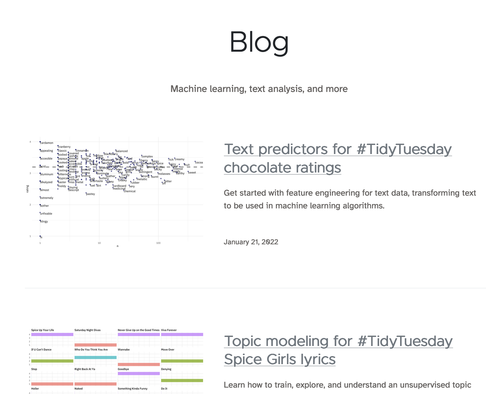
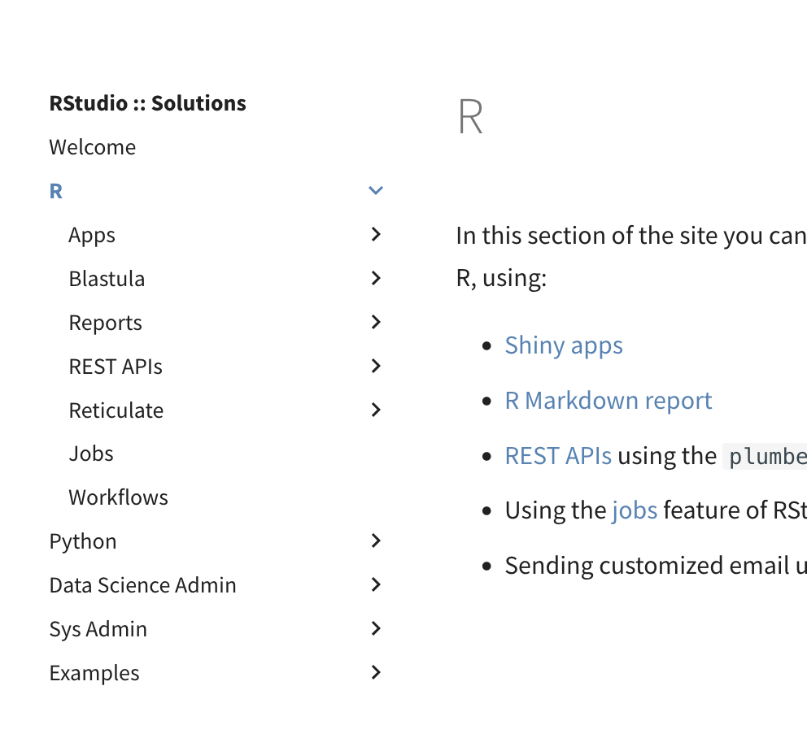
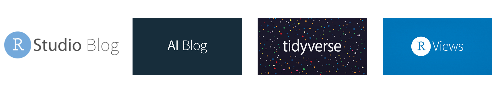

–
About Me
Isabella Velásquez
Sr. Product Marketing Manager, RStudio.
I’d love to share your data science story on the RStudio blog!
- isabella.velasquez@rstudio.com
- Website: ivelasq.rbind.io
- Twitter: @ivelasq3
- Github: @ivelasq
- LinkedIn: @ivelasq
Intro Question
Agenda
- Why create a blog
- Deciding on topics
- Considerations
- Tools for creating a blog
Resources
https://github.com/ivelasq/2022-01-25_building-a-blog-with-r
Types of Websites



Why create a blog?
It’s time to share what you know!
When you’ve written the same code 3 times, write a function
— David Robinson (@drob) November 9, 2017
When you’ve given the same in-person advice 3 times, write a blog post
Collaboration
- Share what you’ve learned
- Write about your opinions
- Give updates and news
Communication
- Practice writing
- Create a portfolio of work
- Centralization of information
Why have an external blog?

Why have an external blog?
Why have an internal blog?
- Share information more easily and effectively
- Improve collaboration
- … resulting in a community for your colleagues
Differences between an internal and external blog
- Audience
- Search engine optimization
Types of posts
- Standard lists
- Profiles
- How-to/tutorials
- News posts
- Problems-and-solutions
- Case studies
- Comparison posts
- Stories
- Open questions
- Inspiration
- Research
- FAQ
- Reviews
- Interviews
- Cheat sheets
- Checklists
- Infographics
- Debates
- Presentations
Source: Problogger
Source: Diátaxis Framework
What do you need?
- Goals and purpose
- Values
- Helpful and relevant content
- Guardrails
- Buy-in and ownership
- Norms and feedback
- Workflow and maintenance
- Technical stuff, too!
Building a Blog With R
- Knowledge of R and R Markdown
- Version control
- Hosting
Today’s Demos


Open call
Do you have a story to share about data science?
Consider contributing to the RStudio Blog!
Reach out to isabella.velasquez@rstudio.com.
Thank you!
- Twitter: @ivelasq3
- Github: @ivelasq
- LinkedIn: @ivelasq
Isabella Velásquez, RStudio